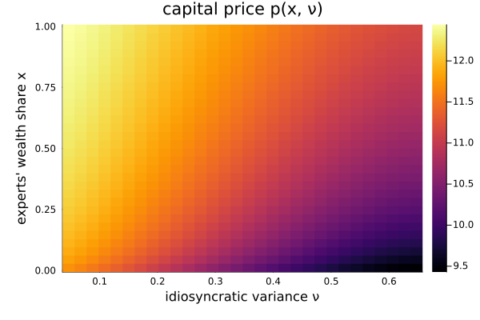

Di Tella (2017): uncertainty shocks and balance-sheet recessions
A two-state general-equilibrium model with a financial sector. Experts and households have recursive preferences and an agency friction (moral hazard) forces experts to bear idiosyncratic risk. There are two states: the experts' wealth share $x$ and a stochastic idiosyncratic variance $\nu$ — the uncertainty shock. Three functions are solved jointly: the two agents' value functions $p_A, p_B$ and the capital price $p$, which is pinned down by an algebraic market-clearing constraint (is_algebraic) rather than by its own time derivative.
The model
The parameters:
using EconPDEs, Distributions, Plots
Base.@kwdef mutable struct DiTellaModel
# Utility Function
γ::Float64 = 5.0 # relative risk aversion
ψ::Float64 = 1.5 # elasticity of intertemporal substitution
ρ::Float64 = 0.05 # rate of time preference (discount rate)
τ::Float64 = 0.4 # transition rate between experts and households
# Technology
A::Float64 = 200.0 # investment adjustment-cost (technology) parameter
σ::Float64 = 0.03 # aggregate (fundamental) volatility of capital
# MoralHazard
ϕ::Float64 = 0.2 # moral-hazard idiosyncratic-risk retention parameter
# Idiosyncratic
νbar::Float64 = 0.24 # long-run mean of idiosyncratic variance ν
κν::Float64 = 0.22 # mean-reversion speed of ν (uncertainty process)
σνbar::Float64 = -0.13 # volatility loading of the ν process
endMain.DiTellaModelThe state space
We build the grid and the initial guess first, because they fix the names used everywhere else. The grid is a NamedTuple whose keys are the two state variables (x, the experts' wealth share, and ν, the idiosyncratic variance); the guess is a NamedTuple whose keys are the unknown functions (pA, pB, p), holding one starting value at each grid point. These names are what reappear inside the equation below — e.g. pAx_up will be the forward finite difference of pA in x.
Two helpers build a 30×30 grid over $(x, \nu)$ and a flat guess. The variance state $\nu$ follows a Gamma-distributed CIR process, so its grid spans that ergodic range.
function initialize_stategrid(m::DiTellaModel; xn = 30, νn = 30)
xs = range(0.01, 0.99, length = xn)
distribution = Gamma(2 * m.κν * m.νbar / m.σνbar^2, m.σνbar^2 / (2 * m.κν))
νs = range(quantile(distribution, 0.001), quantile(distribution, 0.999), length = νn)
(; x = xs, ν = νs)
end
function initialize_y(m::DiTellaModel, stategrid)
xn = length(stategrid[:x])
νn = length(stategrid[:ν])
(; pA = 20 * ones(xn, νn), pB = 20 * ones(xn, νn), p = 20 * ones(xn, νn))
end
m = DiTellaModel()
stategrid = initialize_stategrid(m)
yend = initialize_y(m, stategrid)(pA = [20.0 20.0 … 20.0 20.0; 20.0 20.0 … 20.0 20.0; … ; 20.0 20.0 … 20.0 20.0; 20.0 20.0 … 20.0 20.0], pB = [20.0 20.0 … 20.0 20.0; 20.0 20.0 … 20.0 20.0; … ; 20.0 20.0 … 20.0 20.0; 20.0 20.0 … 20.0 20.0], p = [20.0 20.0 … 20.0 20.0; 20.0 20.0 … 20.0 20.0; … ; 20.0 20.0 … 20.0 20.0; 20.0 20.0 … 20.0 20.0])The equation
We now write the function encoding the equilibrium conditions. Following the package convention, it takes the current state (a grid point) and u — the local bundle holding each unknown and its finite-difference derivatives there — and returns the time derivative of each unknown (pAt, pBt, pt).
With two states, both first derivatives and the cross derivative are upwinded — the first derivatives on the sign of their drifts, the cross term on the sign of the $x$–$\nu$ covariance.
function (m::DiTellaModel)(state::NamedTuple, u::NamedTuple)
(; γ, ψ, ρ, τ, A, σ, ϕ, νbar, κν, σνbar) = m
(; x, ν) = state
(; pA, pAx_up, pAx_down, pAν_up, pAν_down, pAxx, pAxν_up, pAxν_down, pAνν, pB, pBx_up, pBx_down, pBν_up, pBν_down, pBxx, pBxν_up, pBxν_down, pBνν, p, px_up, px_down, pν_up, pν_down, pxx, pxν_up, pxν_down, pνν) = u
# drift and volatility of state variable ν
g = p / (2 * A)
i = A * g^2
μν = κν * (νbar - ν)
σν = σνbar * sqrt(ν)
pAν = (μν >= 0) ? pAν_up : pAν_down
pBν = (μν >= 0) ? pBν_up : pBν_down
pν = (μν >= 0) ? pν_up : pν_down
pAx, pBx, px = pAx_up, pBx_up, px_up
iter = 0
@label start
σX = x * (1 - x) * (1 - γ) / (γ * (ψ - 1)) * (pAν / pA - pBν / pB) * σν / (1 - x * (1 - x) * (1 - γ) / (γ * (ψ - 1)) * (pAx / pA - pBx / pB))
σpA = pAx / pA * σX + pAν / pA * σν
σpB = pBx / pB * σX + pBν / pB * σν
σp = px / p * σX + pν / p * σν
κ = (σp + σ - (1 - γ) / (γ * (ψ - 1)) * (x * σpA + (1 - x) * σpB)) / (1 / γ)
κν = γ * ϕ * ν / x
σA = κ / γ + (1 - γ) / (γ * (ψ - 1)) * σpA
νA = κν / γ
σB = κ / γ + (1 - γ) / (γ * (ψ - 1)) * σpB
# Interest rate r
μX = x * (1 - x) * ((σA * κ + νA * κν - 1 / pA - τ) - (σB * κ - 1 / pB + τ * x / (1 - x)) - (σA - σB) * (σ + σp))
# upwinding
if (iter == 0) && (μX <= 0)
iter += 1
pAx, pBx, px = pAx_down, pBx_down, px_down
@goto start
end
# upwind the cross derivative on the sign of its coefficient σX * σν (the x-ν covariance)
pAxν = (σX * σν >= 0) ? pAxν_up : pAxν_down
pBxν = (σX * σν >= 0) ? pBxν_up : pBxν_down
pxν = (σX * σν >= 0) ? pxν_up : pxν_down
μpA = pAx / pA * μX + pAν / pA * μν + 0.5 * pAxx / pA * σX^2 + 0.5 * pAνν / pA * σν^2 + pAxν / pA * σX * σν
μpB = pBx / pB * μX + pBν / pB * μν + 0.5 * pBxx / pB * σX^2 + 0.5 * pBνν / pB * σν^2 + pBxν / pB * σX * σν
μp = px / p * μX + pν / p * μν + 0.5 * pxx / p * σX^2 + 0.5 * pνν / p * σν^2 + pxν / p * σX * σν
r = (1 - i) / p + g + μp + σ * σp - κ * (σ + σp) - γ / x * (ϕ * ν)^2
# Market Pricing
pAt = - pA * (1 / pA + (ψ - 1) * τ / (1 - γ) * ((pA / pB)^((1 - γ) / (1 - ψ)) - 1) - ψ * ρ + (ψ - 1) * (r + κ * σA + κν * νA) + μpA - (ψ - 1) * γ / 2 * (σA^2 + νA^2) + (2 - ψ - γ) / (2 * (ψ - 1)) * σpA^2 + (1 - γ) * σpA * σA)
pBt = - pB * (1 / pB - ψ * ρ + (ψ - 1) * (r + κ * σB) + μpB - (ψ - 1) * γ / 2 * σB^2 + (2 - ψ - γ) / (2 * (ψ - 1)) * σpB^2 + (1 - γ) * σpB * σB)
# algebraic constraint
pt = - p * ((1 - i) / p - x / pA - (1 - x) / pB)
return (; pAt, pBt, pt)
endp enters as an algebraic (constraint) variable, and a small time step Δ is used:
result = pdesolve(m, stategrid, yend; is_algebraic = (; pA = false, pB = false, p = true), Δ = 1e-2)Residual_norm: 4.569348973601544e-11
Zero: OrderedDict(:pA => [20.702196461318923 21.864836702233628 … 27.84539889565285 27.98933816641031; 16.87367784990954 16.96657522661709 … 18.370032420362662 18.415273372345077; … ; 15.419446303326003 15.35951429273379 … 13.199047226472429 13.181405503296281; 15.427925360437223 15.368178265049929 … 13.211959192512229 13.194294904968563], :pB => [14.096663898639875 13.970862701289766 … 10.567535239200101 10.54168102792955; 14.220518335799465 14.101068605391228 … 10.65491012158116 10.62854136415856; … ; 15.104966160562725 15.030720307788 … 12.340259807691572 12.317308700211687; 15.121943440656533 15.048427792828312 … 12.379976264066707 12.357189030581504], :p => [11.715524333799817 11.644813839243191 … 9.447215449309807 9.428947263412244; 11.8188898284919 11.753155096540178 … 9.603258205257799 9.585361678006773; … ; 12.43009334005372 12.396978342036299 … 11.123654539338387 11.112565268573954; 12.440675310816484 12.407976573623081 … 11.150939544865656 11.139992690454118])
The solution
We show the equilibrium capital price $p$ as a heatmap over the two states — the wealth distribution $x$ and the idiosyncratic-uncertainty state $\nu$. The price varies across the whole state space, reflecting how balance sheets and uncertainty jointly move asset prices.
xs = stategrid[:x]
νs = stategrid[:ν]
heatmap(νs, xs, result.zero[:p]; xlabel = "idiosyncratic variance ν", ylabel = "experts' wealth share x", title = "capital price p(x, ν)")
This page was generated using Literate.jl.